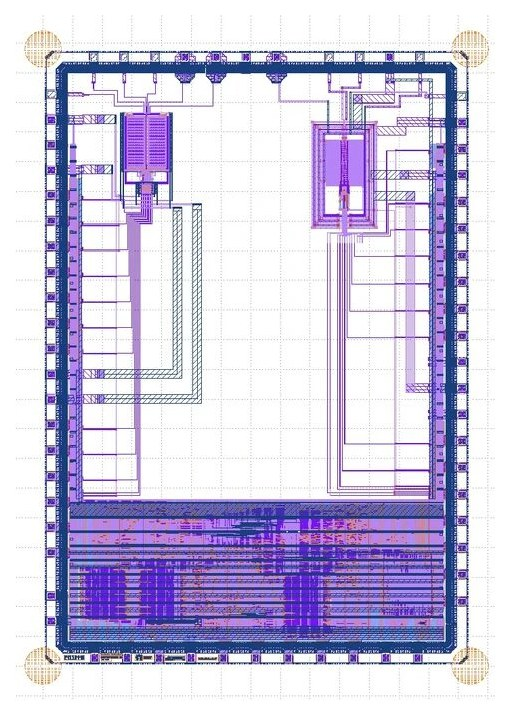

PROJECT 01
A 100 kSPS 8-bit Fully-Differential SAR ADC for Low-Power Applications
A charge-redistribution SAR ADC with binary-weighted capacitor arrays, an auto-zeroed pre-amplifier and regenerative latch comparator, and digital SAR logic — aimed at battery- or RF-powered IoT and wearable/implantable medical devices. Built from scratch by ENTC undergraduates in ten weeks with Xschem, Ngspice, Netgen, OpenLane, Magic and KLayout, and submitted to the Efabless chipIgnite shuttle through the IEEE CASS UNIC-CASS 2024 program — ENTC's first CMOS tape-out.
8-bit
resolution
100 kSPS
sample rate
7.5 bit
target ENOB
1.8 V
AVDD / DVDD